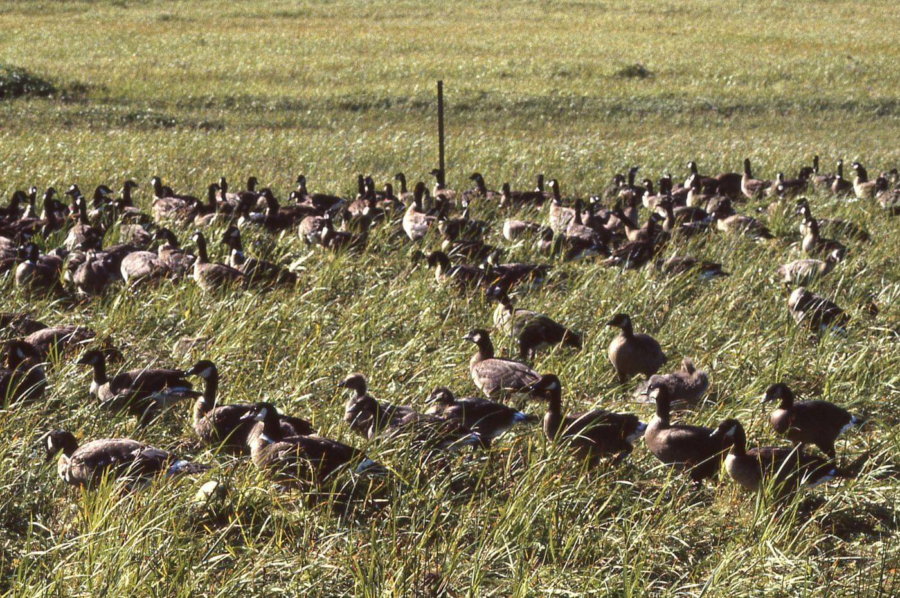
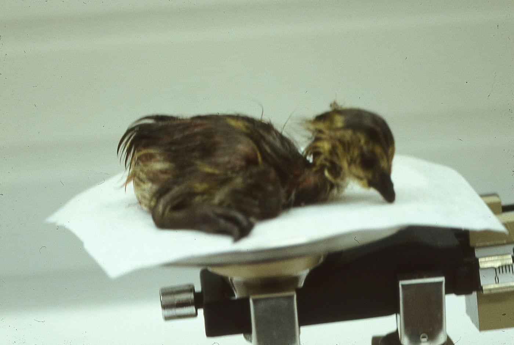
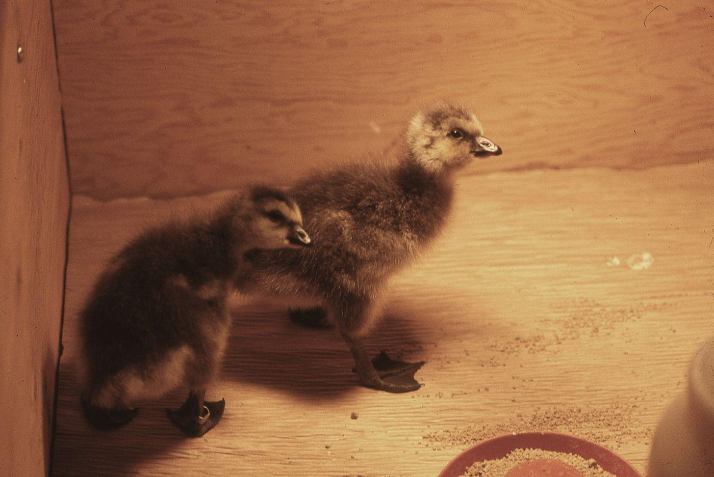
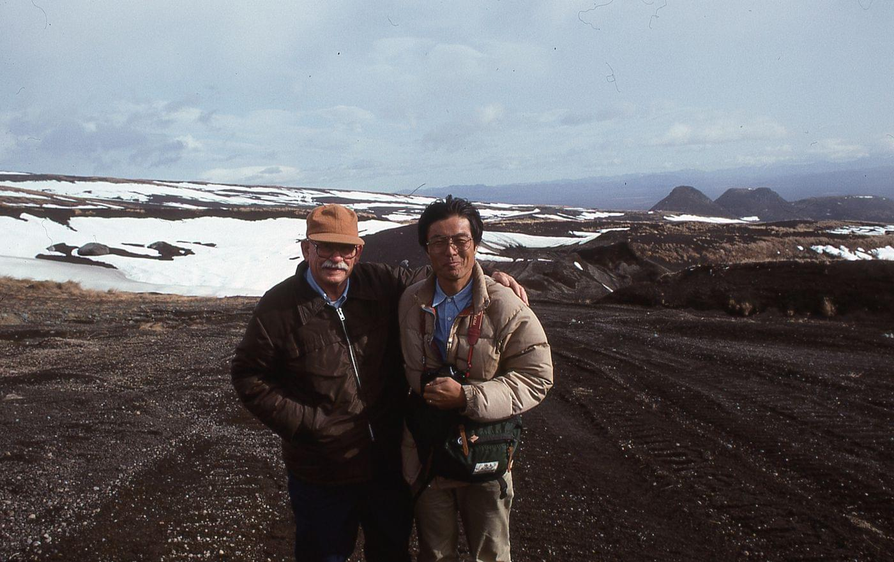

Graduated from St. Cloud State Teachers College with a bachelor's degree in biolgoical sciences.
Luzon, Phillipines, 1944
Deployed with the Army's 37th Infantry Division to the Phillipines.
University of Minnesota, 1948
Received a graduate degree in wildlife management and botany from the University of Minnesota.
Rediscovering the Giant Canada goose, 1962
Forrest had been studying a flock of large Canada geese on Silver Lake at Rochester, Minnesota and invited waterfowl experts in for trapping and further examination. The Silver Lake flock turned out to be Branta canadensis maxima, a
species long thought to be extinct.
Maritime National Wildlife Refuge, 1962
Forrest made his first trip to the Aleutians - photo of him at refuge headquarters at Adak AK. He also went to Amchitka Island on this trip.
Forrest Lee at Alaska Maritime National Wildlife Refuge in 1995.

Aleutian geese held prior to their release.
Aleutian cackling goose.
Aleutian cackling goose in water.
Aleutian cackling goosling ready to be measured.
Aleutian cackling goosling.
Aleutian cackling gooslings in a brooder.
Aleutian cackling gooslings in lupine.

Aleutian cackling hatchling being weighed.

Aleutian cackling goose hatchlings in an incubator.
Forrest Lee with a Family in Kamchatka, Russia October 1992.

Forrest Lee posing for a photo with Fumio Sakumo of Japan in Kamchatka, Russia 1992.
Dr. Nickolai Gerasimov greeting Forrest Lee on translocation flight to Kamchatka September 30th, 1992.jpg.
Flying Aleutian geese.
Forrest Lee in Anchorage with crates of Aleuthian cackling geese ready to be shipped to Kamchatka, September 30th, 1992.
Forrest Lee feeding Aleutian cackling goose during 1994 translocation.
Forrest Lee with members of the Japanese Association for Wild Goose Protection, May 1983.
Sunrise en route to Buldir Island, 1978.
Rasing geese on Amchitka Island, AK, 1976 - 1979
Forrest spent May through August each year on Amchitka Island raising Aleutian cackling geese.
Forrest Lee weighing a gosling.
Forrest Lee at Amchitka Island February 1978.
Aleutian goose recovery team at Amchitka Island airport June 24th, 1978.